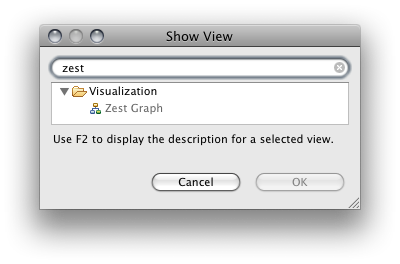
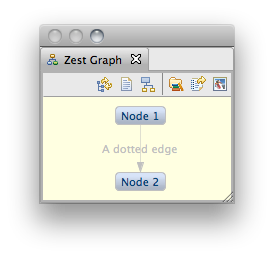
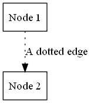
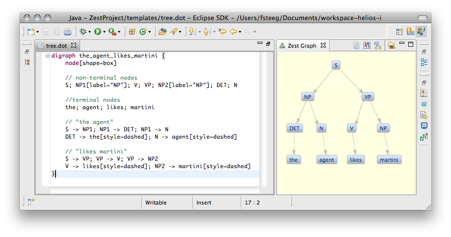
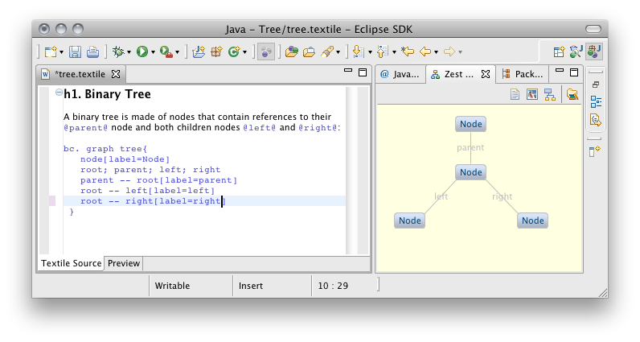
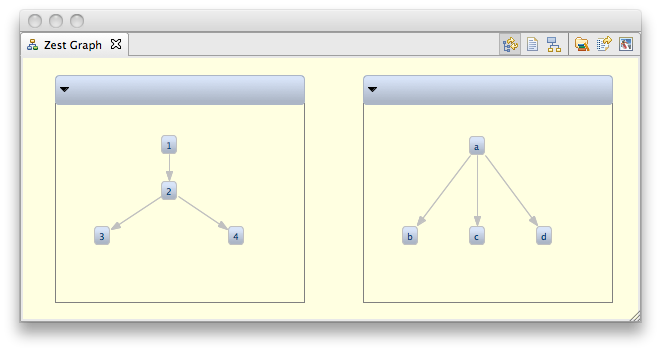
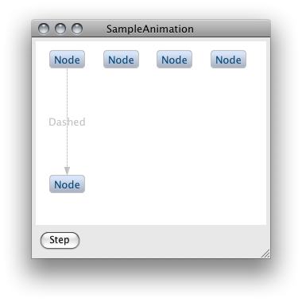
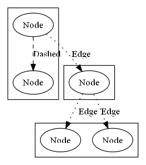

Graphviz DOT as a DSL for Zest
Note to non-wiki readers: This documentation is generated from the Eclipse wiki - if you have corrections or additions it would be awesome if you added them in the original wiki page
This Eclipse feature provides support for the Graphviz DOT language in Zest: The Eclipse Visualization Toolkit, both as an input and output format. It provides API und UI elements to transform both DOT graphs to Zest visualizations (to be used in Java SWT applications), and Zest visualizations to DOT graphs (to be rendered as image files with Graphviz).
Install from the marketplace (Help > Eclipse Marketplace...) or add the update site at http://quui.de/updates (Help > Install New Software... > Add...) and install the dot4zest feature (from the Zest category) in Eclipse 3.6 or 4.0. To install dot4zest in Eclipse 3.5, make sure you have the TMF update site at http://download.eclipse.org/modeling/tmf/updates/releases set up. Note that the dot4zest update site is provided externally for easy access to preview releases, and is not hosted by the Eclipse Foundation.
This feature adds a DOT editor and a Zest graph view to the UI:

The Zest Graph view can visualize DOT graphs in *.dot files or embedded in other files in the workspace. The view draws the DOT graphs using Zest and allows for image export of the current Zest graph. When automatic updating is enabled (see below), and a *.dot file or embedded DOT content is added to the workspace or altered in an editor, the Zest graph view is updated with the graph created from the DOT input. For instance, consider a file with the .dot extension, containing the following DOT graph definition:
digraph s{
n1[label="Node 1"]; n2[label="Node 2"];
n1 -> n2[style=dotted label="A dotted edge"]
}
The view will display:

The view contains buttons to toggle automatic updates, to load a specific file containing a DOT graph, and to layout the current graph. To export the current Zest graph as an image file by calling the dot executable, the view contains buttons to re-select the directory containing the dot executable, to enable export of the original DOT input, and to export as an image file (from left to right). When the image export button is selected, a PDF for the current graph is saved in the directory containing the file with the DOT input, and opened with the associated external editor, if one is available. In this example, the export looks like this:

This provides a Zest-based DOT authoring environment. If a *.dot file or embedded DOT is edited, it will be visualized in the Zest Graph view (e.g. during editing), and can be exported as a PDF with Graphviz.
At the same time the view provides a simple way to visualize *.dot file output of any kind of program, e.g. to visualize and debug internal data structures, results, etc: if a program running in Eclipse outputs any *.dot file in the workspace and the workspace is refreshed, the view will be updated with the corresponding Zest graph (if automatic updating is enabled, see above).
The Zest view can be used with the included DOT editor to visualize a DOT file:

Additionally, the Zest view also displays embedded DOT in other files, e.g. in source code comments or in wiki markup:

Via the API, DOT can be imported to Zest graph instances, and Zest graph instances can be exported to DOT.
To use the API, create a new Plug-in project, add org.eclipse.zest.dot.core to the MANIFEST.MF dependencies, paste the code below into the source folder of the created project, and select Run As > Java Application:
import org.eclipse.swt.SWT; import org.eclipse.swt.layout.FillLayout; import org.eclipse.swt.widgets.Display; import org.eclipse.swt.widgets.Shell; import org.eclipse.zest.dot.DotGraph;
public class SampleUsage {
public static void main(String[] args) {
Shell shell = new Shell();
DotGraph graph = new DotGraph("digraph{ 1->2 }", shell, SWT.NONE);
graph.add("2->3").add("2->4");
graph.add("node[label=zested]; edge[style=dashed]; 3->5; 4->6");
open(shell);
System.out.println(graph.toDot());
}
private static void open(final Shell shell) {
shell.setText(DotGraph.class.getSimpleName());
shell.setLayout(new FillLayout());
shell.setSize(600, 300);
shell.open();
Display display = shell.getDisplay();
while (!shell.isDisposed())
if (!display.readAndDispatch())
display.sleep();
display.dispose();
}
}
The complete sample usage is available in the repository, as well as working DOT input samples.
Cluster subgraphs imported to a Zest Graph instance are rendered as Zest graph containers, e.g.:
digraph subgraphs {
subgraph cluster1 { 1 -> 2; 2 -> 3; 2 -> 4 }
subgraph cluster2 { a -> b; a -> c; a -> d }
}

Cluster subgraphs can be labeled and can define their own layouts, e.g.:
digraph agent {
subgraph cluster1 { label = "the agent likes martinis"
S -> NP; NP -> the; NP -> agent; S -> VP; VP -> likes; VP -> martinis
}
subgraph cluster2 { label = "martinis"; rankdir = LR
martinis -> pos; martinis -> number; martinis -> semantics; martinis -> grammar
pos -> noun; number -> plural; semantics -> patient; grammar -> object
}
}

The goal of this feature is to implement the Graphviz DOT language as a domain-specific language (DSL) for Zest: The Eclipse Visualization Toolkit, both as an input and output format. In other words, the goal is to transform both DOT graphs to Zest visualizations (to be used in Java SWT applications), and Zest visualizations to DOT graphs (to be rendered as image files with Graphviz).
This feature started as a project in the Google Summer of Code 2009 by Fabian Steeg, mentored by Ian Bull, for Zest. It is currently scheduled for inclusion in the Indigo simultaneous release.
The main bug for this feature is bug 277380. View a complete list of related bugs. If you have suggestions for this feature you can file a new bug. The code for this feature is part of the CVS repository at dev.eclipse.org:/cvsroot/tools. The dot4zest bundles can be found in org.eclipse.gef/plugins and org.eclipse.gef/test, named org.eclipse.zest.dot.*.
To run the current work in progress code (in Eclipse 3.6 Helios), install the Zest, JET, Xtext and MWE features (which are available from the Helios update site under the modeling category). You will also have to install the Xtext Antlr feature 1.x.x from the Itemis update site at http://download.itemis.com/updates/milestones (see the Xtext documentation for details on this).
Then, check out the bundles from the CVS location above. After the checkout, run (Run As -> MWE2 workflow) the GenerateDot.mwe2 in the /src/org/eclipse/zest/internal/dot/parser folder of the import bundle. Make sure to set the project or workspace encoding to UTF-8.
Run the All*.java test suites of the test bundle ( org.eclipse.gef/test/org.eclipse.zest.dot.tests) as JUnit or JUnit Pug-in tests to get an impression of the current implementation state. To use the UI components, run an Eclipse application configured with org.eclipse.zest.dot.ui and required plugins. See details on usage in the user documentation above.
Graphviz is a very popular tool and its DOT language is widely used. Support for it could make using Zest very easy for many people who are familiar with DOT.
DOT integration for Zest could also be useful for existing Eclipse tools that are based on Graphviz, like TextUML or EclipseGraphviz, and others, for instance in the Mylyn rich task editor (for embedding DOT graphs in wiki text markup, visualized with Zest).
On the output side, Zest can benefit from Graphviz output as it provides a way to produce high-quality export into different file formats, e.g. for printing Zest visualizations, or using them in digital publications.
The dot4zest functionality is implemented based on Eclipse Modeling technologies, in particular Xtext (part of TMF) for the input part (parse DOT, generate Zest) and JET for the output (see details below).
Based on an Xtext grammar, dot4zest interprets the parsed DOT EMF model using the generated Xtext switch API to dynamically create Zest graphs. The Zest graph view uses this to display DOT with Zest (see above).
To transform Zest graph instances to the Graphviz DOT language dot4zest uses JET.
There are two reasons to use JET instead of Xpand here. First, this allows us to transform any Zest graph instance to DOT directly (not only those for which we have a DOT meta model instance that could act as the input to Xpand).
Second, even if we had a DOT meta model instance (which we could create from the Zest graph), using Xpand would introduce a runtime dependency on the Modeling Workflow Engine, whereas with JET we only introduce a dependency on a single class (the generator class JET created from the template).
For instance, for the input below a Zest animation could be created that changes like this (this is an experimental illustation of the idea):
digraph SampleAnimation {
/* We can specify a Zest layout for the animation here: */
layout=tree // = TreeLayoutAlgorithm
/* Global attributes can be defined for edges and nodes: */
node[label="Node"]
edge[label="Edge" style=dotted]
1;2;3;4;5
/* The single animation steps are marked by numbers: */
subgraph cluster_animation_0{ 1 -> 2 [label="Dashed" style=dashed]}
subgraph cluster_animation_1{ 1 -> 3 }
subgraph cluster_animation_2{ 3 -> 4; 3 -> 5}
}
After the first step:

And the final state of the graph:

The same input file, exported with Graphviz, shows the animation steps as subgraphs:

A possible use case for defining such animations with DOT is to easily create animated documentation, e.g. to explain data structures. The same file defining the animation could be used to export a PDF illustrating the steps in a static way.
{kind=link}
{kind=link}